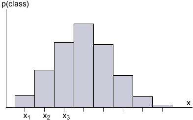

Discrete distributions are often summarised by their mean and variance. The mean and variance of a continuous distribution are similar concepts, but must be defined in a different way.
Mean
We defined the mean of a discrete random variable to be
\[ E[X] \;=\; \mu \;=\; \sum_{\text{all } x} {x \times p(x)} \]Consider a histogram of a continuous random variable, \(X\), with the histogram classes centred on \(x_1, x_2, \dots\).

If the values in each histogram class were at the midpoint of their classes, the corresponding definition of the mean would be
\[ E[X] \;\approx\; \sum_{i} {x_i \times p(\text{class }i)} \]Making the classes narrower would refine the definition:
The mean of the continuous random variable is the limit of this, as the classes are made narrower and narrower.
We will formally define the mean as an integral later in the e-book.
Variance
The variance of a discrete random variable is
\[ \Var (X) \;=\; \sigma^2 \;=\; E \left[(X - \mu)^2 \right] \;=\; \sum_x (x - \mu)^2 \;p(x) \]The corresponding variance of a continuous random variable is what would be obtained in a similar way as a limit of those from the discrete histograms above, with classes getting narrower and narrower.